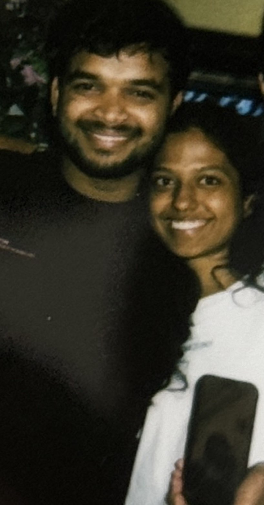

❤️ Our Story ❤️

US
If someone asked me where our story began,
I wouldn’t say a café,
or a classroom,
or some romantic place from a movie.
I’d say it started in a PUBG lobby.
A mutual friend sent an invite,
you joined the squad,
and somehow,
without either of us knowing,
you joined my life too.
It started with simple messages.
“When are you free?”
“Wanna play?”
“Let’s queue.”
Just a few words.
But those few words turned into hours,
hours turned into habits,
and habits turned into a person
I couldn’t imagine my day without.
At first,
you were my best friend.
The kind of best friend who annoyed me,
made fun of me,
said whatever came to his mind without a filter,
and somehow still became my favourite notification.
You were chaos.
I was chaos.
You were stubborn.
I was stubborn.
You gave gali.
I gave it right back.
Neither of us listened to our families,
and most of the time,
we didn’t listen to each other either.
Maybe that’s why we fit so perfectly.
Maybe that’s why we broke each other too.
For two and a half years,
you weren’t just my boyfriend.
You became my home.
My first concert.
My first club.
My first stupid lie told at home for a trip.
Our first Pune trip together.
My first Alibaug trip.
So many firsts carry your name.
I travelled cities just to see you.
From Mysore to Bangalore,
counting days until weekends,
counting hours until I could hold you again.
And when life finally brought me to Bangalore,
half my life somehow ended up in your room.
That tiny 1RK in JP Nagar
felt bigger than any mansion
because it had us in it.
Us cooking together.
Us arguing over dishes.
Us fighting over who would clean.
Us getting irritated,
then laughing ten minutes later.
Us sleeping together,
waking up together,
eating together,
watching series together,
living ordinary days
that somehow became the most extraordinary memories of my life.
People think love is in grand gestures.
But my love lives in toothbrushes standing side by side.
In unfinished arguments.
In late-night food.
In your clothes lying around the room.
In hearing you say,
“Just five more minutes,”
when I was yelling at you to get up.
Those are the memories
I carry everywhere.
And yes,
we fought.
A lot.
Sometimes because we cared too much.
Sometimes because we wanted things our way.
Sometimes because neither of us knew
how to put our pride down.
Love was never our problem.
The way we handled our pain was.
And maybe the hardest truth to admit
is that some of our wounds
were not created in a single day.
There was a time
you asked me not to talk to someone.
Not because you wanted control,
but because you were scared.
Because trust had never come easy to you.
And I still spoke to him behind your back.
At the time,
I told myself it wasn’t a big deal.
Today,
I understand why it became one.
Trust is a strange thing.
It takes years to build,
and only moments to shake.
I know your fears didn’t begin with me.
You carried scars long before I arrived.
Traumas you rarely spoke about.
Fears I didn’t always understand.
And somewhere between my mistakes
and your wounds,
the trust between us started to crack.
Not because we stopped loving each other.
But because we stopped feeling safe.
And for that,
I carry my share of the responsibility.
Not because I was the only one wrong,
but because I finally understand
how much my actions hurt you.
And today,
as I sit here missing you,
I finally understand something I didn’t before.
I understand what you felt.
Because there was a time
when I walked away first.
A time when I didn’t answer.
A time when I ignored your calls.
A time when you sat where I am sitting now.
WAITING.
HOPING.
HURTING.
And I remember what you told me recently.
“I was there too, Varshini.
When you dumped me.”
Those words never left my mind.
Because now,
karma has placed me
on the other side of the story.
And it hurts.
God, it hurts.
I miss your voice.
I miss your touch.
I miss sending you random things.
I miss being the first person
you wanted to tell everything to.
More than anything,
I miss my best friend.
The boy from a PUBG lobby
who somehow became my entire world.
The boy who cried in front of me.
The boy who trusted me with his fears.
The boy who once chose me
over everyone else.
The boy who made me feel
like I was his home too.
And maybe that’s why
I still hold onto hope.
Because when I asked you,
“I hope I still have that special place
in your heart.
That soft spot nobody can take from me.
Nobody can replace.”
You didn’t hesitate.
You said,
“Nobody can.
And nobody will.”
When I told you
I hated the thought of another girl
taking my place beside you,
you smiled and said,
“I won’t let that happen.
I won’t let anybody come near me.”
And maybe those words
are the reason I still believe
this isn’t goodbye.
Because even now,
through all the distance,
all the confusion,
all the silence,
you still remind me
that I am not being replaced.
That what we had
still matters to you.
And now,
when your messages don’t come,
when the calls end quickly,
when the silence stretches for days,
I won’t lie.
I break a little.
I overthink.
I stare at my phone.
I reread old chats.
I search for you
in places where only memories remain.
But even after all the hurt,
all the distance,
all the unanswered questions,
there is still love.
Not the loud kind.
Not the desperate kind.
Just a quiet love
that still believes in us.
Maybe this break is really what you need.
Because even now,
you haven’t told me
that you stopped loving me.
You only told me
that you needed time.
A break.
Space to think.
Space to breathe.
Space to focus on your future.
And every time I fear
that you’re slipping away forever,
I remember what you told me:
“I have nobody else.”
And,
“I’ll be back.
Just give me time to think.”
Those words
have become the tiny light
I hold onto
on the darkest days.
Maybe you truly are building your future,
focusing on your work,
carrying responsibilities I don’t fully see.
And maybe loving you right now
means giving you the space
I once failed to give.
But if life ever brings us back
to the same place again,
I hope we meet differently.
Not as two stubborn people
trying to win every fight.
But as two people
finally choosing each other over their egos.
Because despite everything,
if I could go back
to that PUBG lobby,
to that mutual friend,
to that first message asking me to play,
I would still press “Accept.”
Every single time.
And maybe love isn’t only found
in the people who stay.
Maybe it’s also found
in the things they keep.
The letter I wrote you
after everything fell apart,
the one that said
I would always love you
you still have it.
Safe inside your closet.
You showed it to me.
As if to remind me
that not everything was thrown away.
The paint prints of our hands,
our names written beside them,
the tiny heart we made with our thumbs
they’re still there too.
A small piece of us,
frozen in time.
The hand mould.
The memories we built.
The life we shared.
You kept them all.
Just like I kept every version of you
inside my heart.
And sometimes I think about
the boy who wasn’t even my boyfriend yet.
The boy who spent his savings
on a gold bracelet.
The boy who took me shopping
and made me feel special
without ever being asked.
The boy who gave so much of himself
long before we officially belonged
to each other.
And I realize
that people don’t do those things
when they don’t care.
People don’t keep memories
when they want to forget.
People don’t save pieces of a love story
they never valued.
Even your parents,
who watched us from the outside,
saw something worth fighting for.
They told you not to throw us away.
To put the ego aside.
To learn how to stay.
To learn how to work through things.
And somehow,
that gives me comfort.
Because even the people who love you most
could see what we had.
Because even with the heartbreak,
even with the tears,
even with the lessons and regrets,
you are still one of the most beautiful things
that ever happened to me.
And if this is not the end of our story,
then I’ll wait patiently
for the chapter where we find our way back.
Not because I need you to complete me.
But because after all this time,
you still feel like HOME.